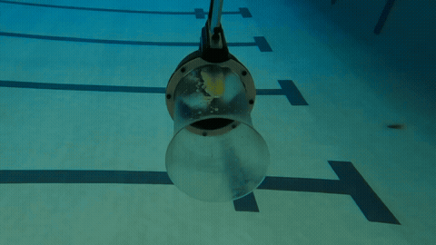
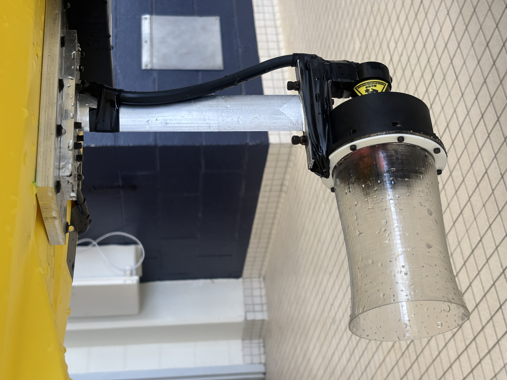
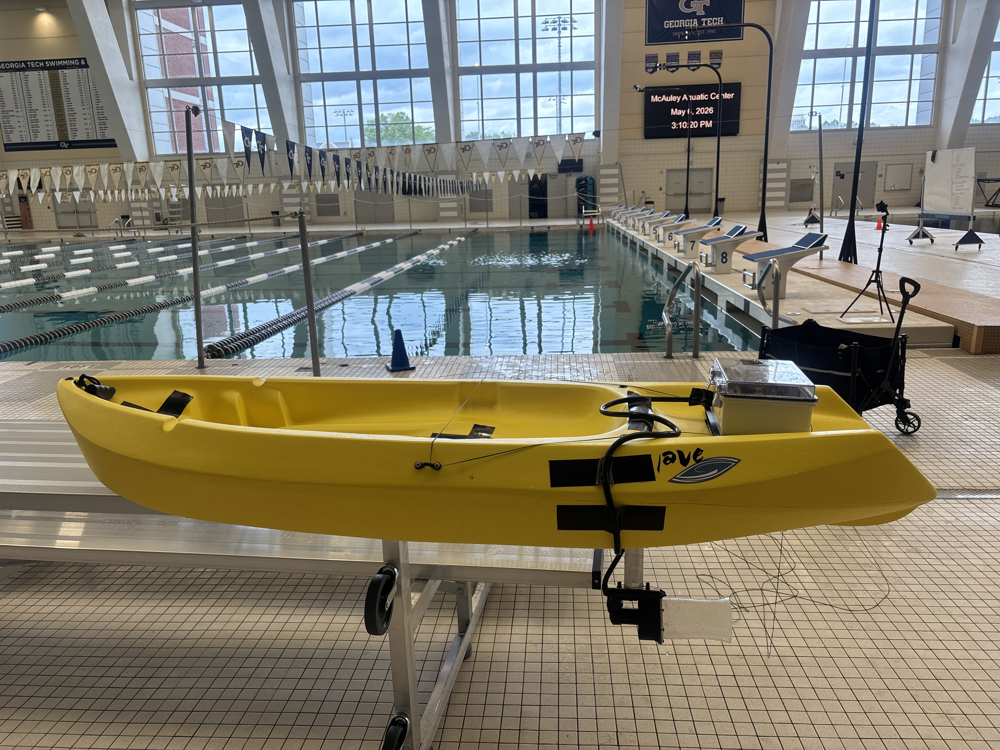
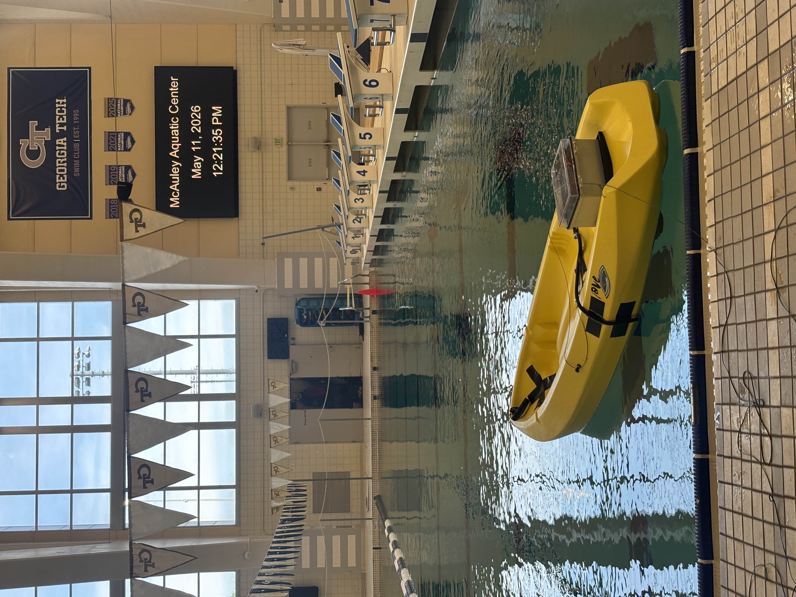
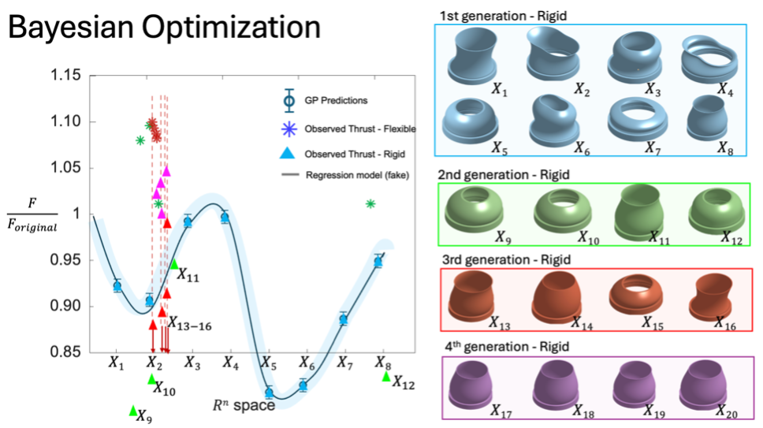
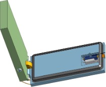

As part of a DARPA superpropulsion project at the Bhamla Lab, I contributed to the design and fabrication of a soft bio-inspired nozzle system for autonomous underwater vehicles (AUVs) — inspired by the jet propulsion mechanics of squid. The system achieved a 30% improvement in thrust at equivalent power consumption.
I applied a multi-fidelity Bayesian optimization framework to refine nozzle geometry and material design spaces, reducing experimental testing time by 70% while collaborating with CFD and FEA simulation teams. I designed and built a full-scale aluminum test structure mounted to a single-hull vessel for open-water validation, along with custom force load test rigs using load cell instrumentation and Arduino-based DAQ pipelines.
I also performed Particle Image Velocimetry (PIV) and high-speed imaging to analyze fluid–structure interactions, and used MATLAB and Python to post-process data for DARPA program managers and naval contractors. I am co-author on two peer-reviewed publications and a provisional patent, with a third paper currently in review at Science Advances.




Full-scale experimental soft nozzle testing — I developed this support propeller system and tested in a competition-sized pool at the Georgia Tech McAuley Aquatic Center (May 2026).

Multi-objective Bayesian optimization results — nozzle geometry generations (rigid) and thrust measurements across the design space.
Conference Presentations
- APS Global Physics Summit 2026 — Oral Presentation · Denver, CO · March 2026
- SICB Annual Meeting 2026 — Oral Presentation · Portland, OR · January 2026
- APS Division of Fluid Dynamics 2025 — Oral Presentation · Houston, TX · November 2025
- APS Global Physics Conference 2025 — Poster · Anaheim, CA · March 2025
The "Manu" is a Pacific island diving technique in which a person jumps into a pool or body of water with their knees tucked to their chest, creating an enormous splash. This research investigates the fluid dynamics underlying the Manu — specifically how body posture, entry angle, and timing control the magnitude of the splash.
Using high-speed imaging and computational fluid dynamics, we characterized how air entrainment and cavity formation drive the large water displacement characteristic of the Manu. The work was published in the Journal of the Royal Society Interface and featured by Georgia Tech.
High-speed imaging sequences comparing late, optimal, and early cavity opening.

Experimental apparatus for controlled Manu water entry trials.
Featured Coverage
Conference Presentations
- Southeast Regional SICB Meeting — Oral Presentation · Harrisonburg, VA · November 2024

Mudskippers are amphibious fish that move across tidal mudflats using a distinctive water-hopping gait. This research developed a portable, low-cost methodology to capture three-dimensional tracking data of mudskippers in their natural tidal-flat habitat.
Our approach combined dual-camera video recordings with Gaussian Splatting terrain reconstruction and stereo matching to document detailed mudskipper trajectories. The findings reveal that horizontal stride length, hopping height, and velocity are strongly influenced by fish length and local terrain features — demonstrating how simple field-deployable techniques can resolve complex amphibious movements in challenging environments. A follow-on study on interfacial dynamics during water-hopping is currently in preparation.
Conference Presentations
- Southeast Regional SICB Meeting — Oral Presentation · Harrisonburg, VA · November 2024